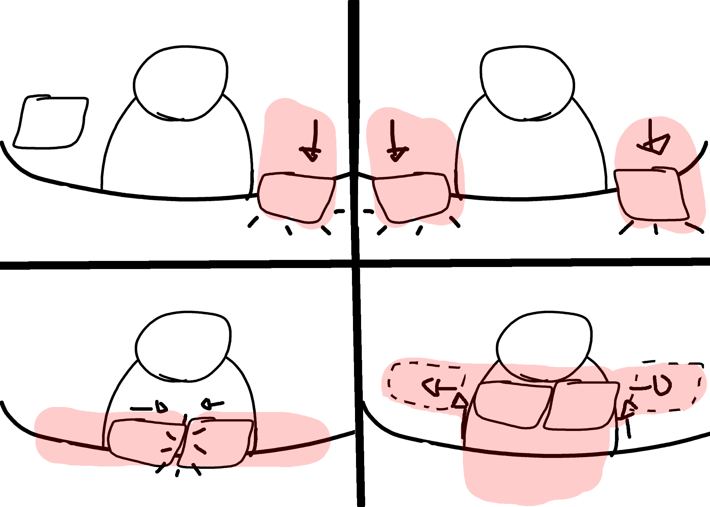

The Project state
Despite the COVID outbreak, our group project couldn't materialize into a fully developed game. Instead, we created a comprehensive game design document that captures our vision in detail. Although the game won't be realized, the document serves as a testament to our dedication and a valuable portfolio piece.
The Concept
The game is based on morality inspired by "Hollow Knight", "BioShock" and "Valiant Hearts: The Great War". It takes place in the ancient Poldoor, a fictional kingdom invaded by fiends, twisted creatures, once humans whose souls are lost and corrupted.
My Contribution
I played a significant role in the team as the art director, but my responsibilities extended beyond that title, aligning more closely with that of a game director. Based on my past projects, my colleagues recognized my capabilities and entrusted me with the task of overseeing the entire game development process. In this role, I took on various responsibilities, ensuring that the team maintained a unified vision and delivered a cohesive gaming experience. I was heavily involved in designing crucial elements such as game mechanics, narrative structure, and the game world, which were essential for shaping the overall experience.World Design
In the environments of the gameplay we wanted to enforce the emotional transition present in the narrative. As the player discovers more and more, the story gets darker, which is reflected in the mood and the gameplay - we wanted to take advantage of this by providing extra feedback in the actual environment. As the player progresses throughout the gameplay, we have pushed the boundaries of storytelling through the levels by progressively going from day (Tutorial) to sunset (Level1) to night-time (Level2) to dark closed place (Boss level).
World Structure
Mechanics
Player Abilities
The enemies in the game are equipped with a range of diverse abilities that add excitement and challenge to the platforming experience. These abilities are specifically designed to create engaging encounters and test the player's skills. From acrobatic manoeuvres to environmental interactions, each enemy presents unique challenges that the player must overcome in their platforming journey.
Enemy Design
Design enemies with unique appearances and abilities to ensure easy recognition. Create varied attack patterns to keep players engaged. Explore cooperative and competitive interactions among enemies for dynamic encounters.
Boss Fight
The objective of the boss fight is to defeat a stone golem in an intense battle set within a ring.
Boss Level
Boss Structure
World Structure
Word Color Progression
Phases
The fight divided into three distinct phases. As the phases advance, the golem's difficulty increases, requiring the player to adapt their strategies and skills accordingly.

First Phase: Just Punches
Second Phase: Adding Projectiles

Third Phase: Adding Charging Beam Attack